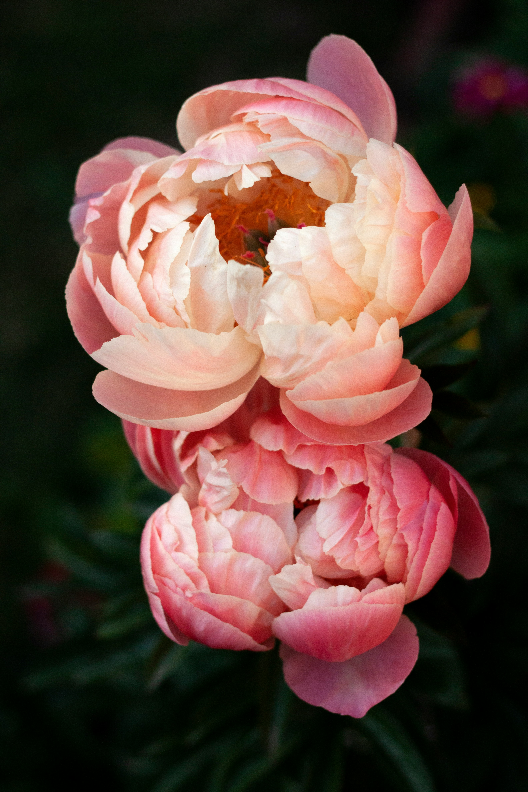
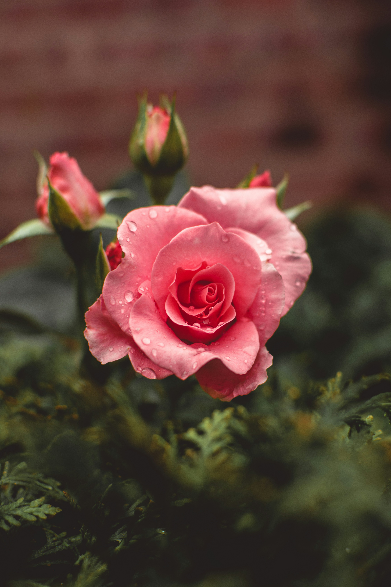
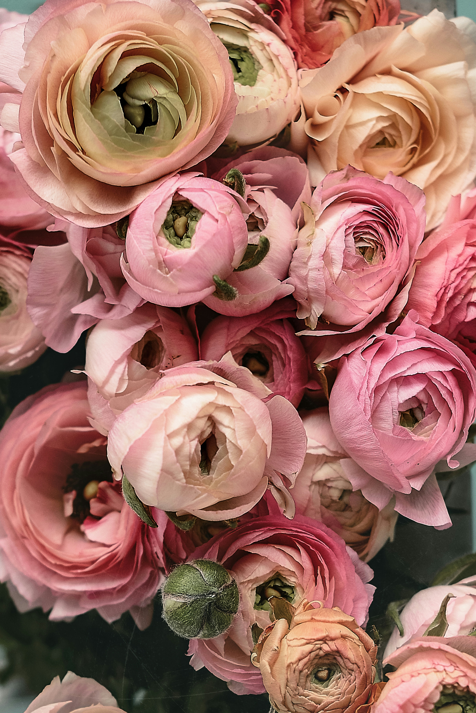
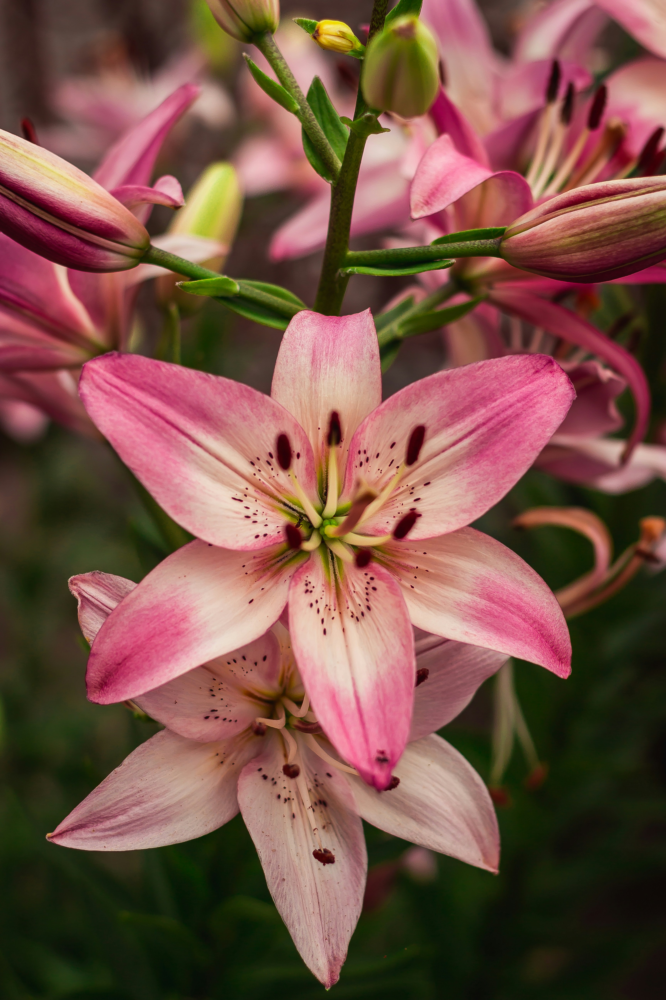
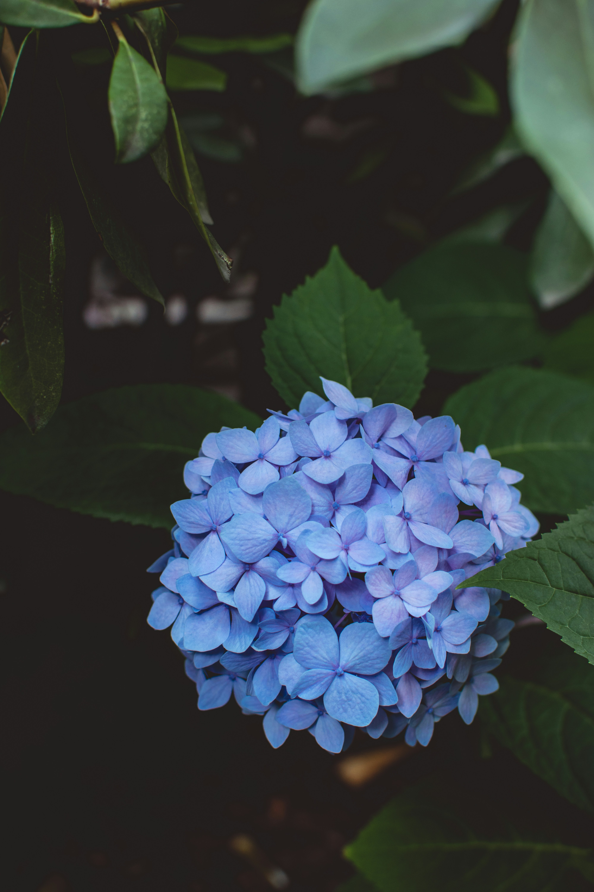

Peonies
Peonies are loved for their full, soft petals and beautiful round shape. They bloom in late spring and early summer, bringing a romantic feeling to gardens and bouquets.
Their colours range from pale blush to deep pink and creamy white. Peonies look lovely on their own or arranged with simple greenery.

Roses
Roses are classic garden flowers known for their layered petals and delicate fragrance. They come in many colours, from soft cream and pale pink to rich red and burgundy.
Depending on the variety, roses can feel elegant, playful or dramatic. A small bunch in a simple vase can make a room feel warm and special.

Ranunculus
Ranunculus flowers have many thin petals arranged in neat layers. Their detailed shape makes each bloom look almost like a little piece of paper art.
They are popular in spring bouquets and look beautiful in peach, white, yellow and pink. Mixed with greenery, they create a light and natural arrangement.

Lilies
Lilies have long stems and large, open blooms that stand out in a flower arrangement. Their petals can be smooth or gently curved, giving each flower an elegant shape.
White, pink and peach lilies are especially popular for calm, minimal bouquets. One or two stems can make a simple vase arrangement feel complete.

Hydrangeas
Hydrangeas are made up of many tiny flowers gathered into large, rounded clusters. Their full shape adds softness and volume to bouquets and garden borders.
They can be white, pale pink, blue or purple, depending on the variety. Hydrangeas look beautiful as the main flower in a vase or mixed with smaller blooms.